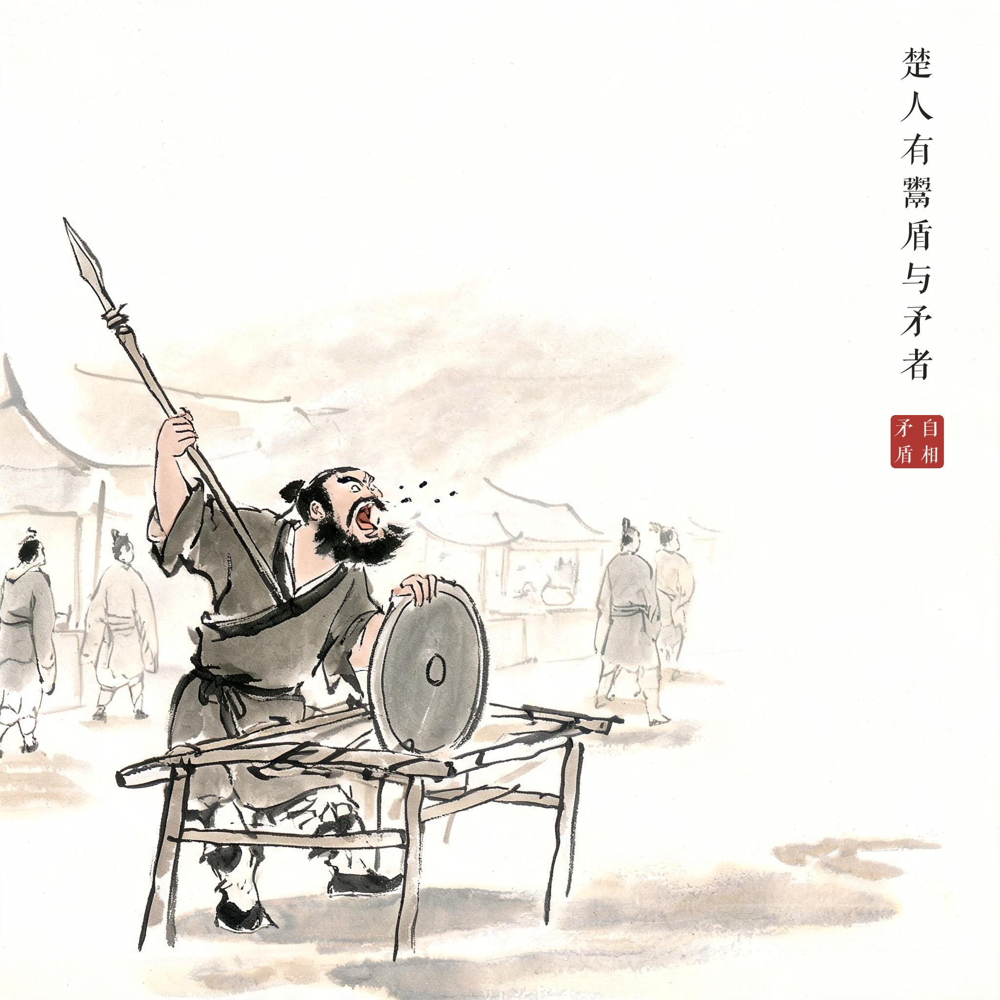
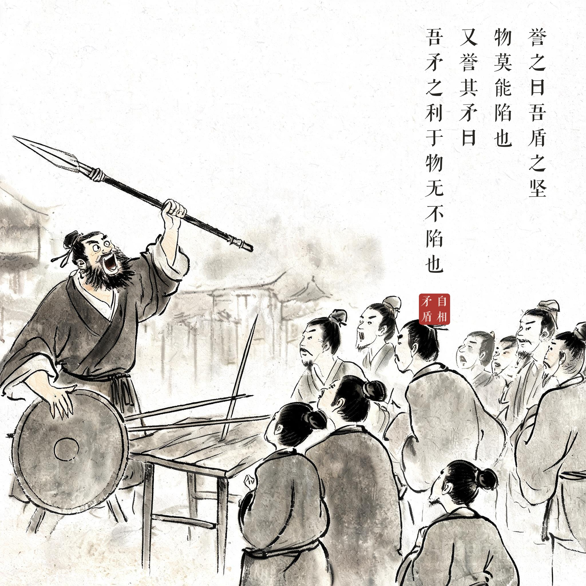
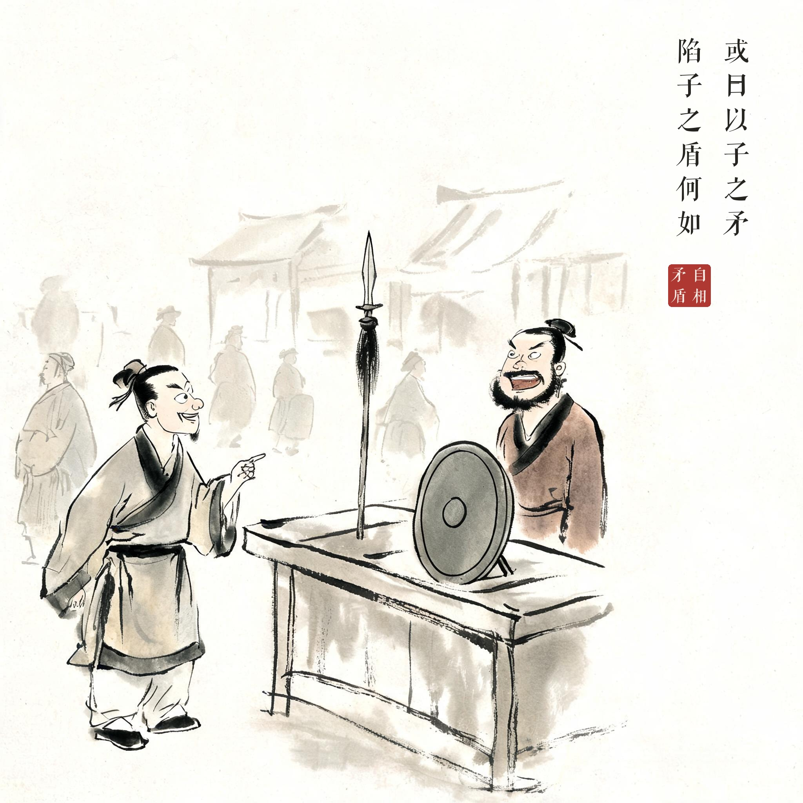
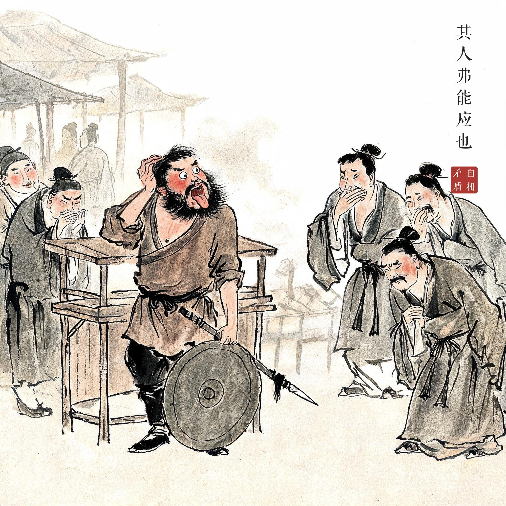

《韩非子 · 难一》
楚人有鬻盾与矛者，誉之曰：吾盾之坚，物莫能陷也。又誉其矛曰：吾矛之利，于物无不陷也。或曰：以子之矛陷子之盾，何如。其人弗能应也。
楚国有个既卖盾又卖矛的人，夸他的盾说："我的盾坚固无比，没有什么东西能刺穿它。"又夸他的矛说："我的矛锋利无比，没有什么东西它刺不穿。"有人问他："用您的矛刺您的盾，会怎么样呢？"那人哑口无言，答不上来了。
说话做事前后抵触、不能自圆其说；无法两立的命题不能同时成立（形式逻辑中的"矛盾律"典出于此）。